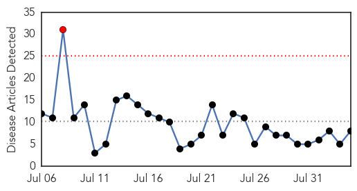
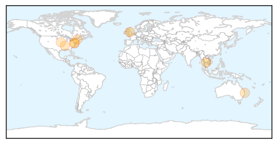
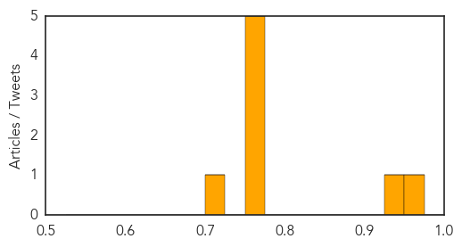

Hemmorhagic Fever
30-Day Web Trend
2 alerts, 0 warnings

30-Day Twitter Trend
0 alerts, 0 warnings

Article Locations

Article Confidences

Top Articles:
-
No articles found for Aug 04, 2015
Top Tweets:
-
No tweets found for Aug 04, 2015
Influenza
30-Day Web Trend
1 alerts, 0 warnings

30-Day Twitter Trend
0 alerts, 0 warnings
Article Locations
Article Confidences
Top Articles:
- 0.952
- New Zealand hospital worker fired for refusing to accept influenza vaccine -- Health & Wellness -- Sott.net
- 0.945
- Department of Disease Control issues a warning over pandemic flu
- 0.751
- August 4, 2015 Archives
- 0.751
- August 3, 2015 Archives
- 0.751
- August 3, 2015 Archives
- 0.751
- August 3, 2015 Archives
- 0.751
- August 3, 2015 Archives
- 0.702
- HCH Family Practice Clinic collecting influenza data
Top Tweets:
-
No tweets found for Aug 04, 2015